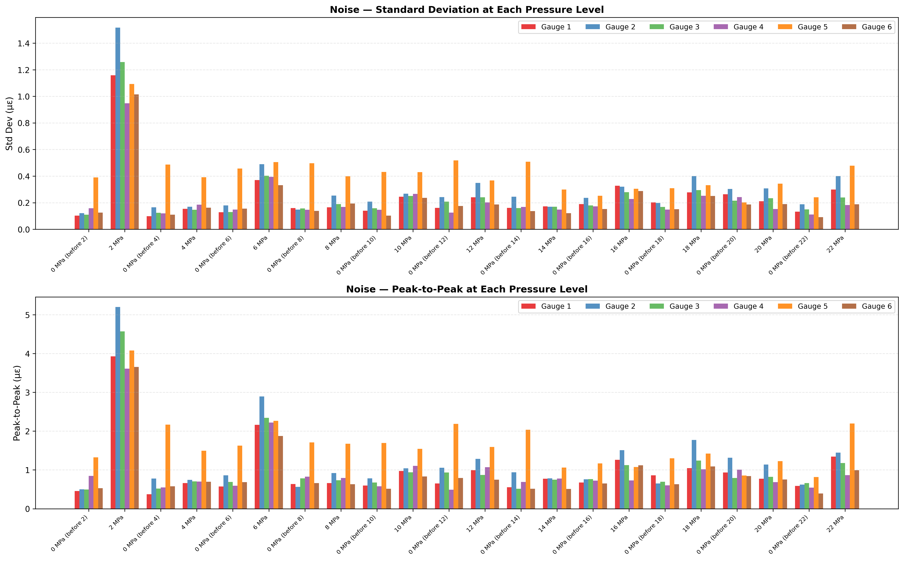
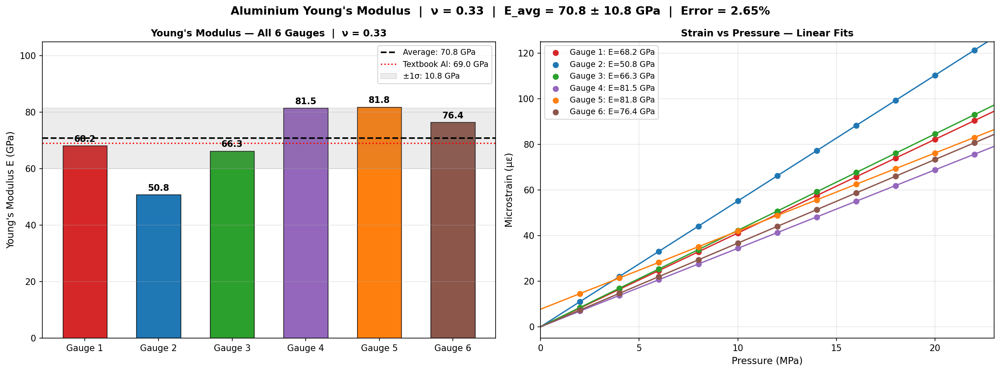

01 — Application
Why Hydrostatic Testing and What It Measures
Young's modulus — the ratio of stress to strain in the elastic region of a material — is one of the most fundamental mechanical properties in engineering. It determines how much a structure deflects under load, how energy is stored and released during elastic deformation, and whether a material is suitable for a given structural application. Accurate experimental measurement of Young's modulus requires applying a known, controlled stress to a sample and measuring the resulting strain with sufficient precision to extract the stress-strain slope reliably.
Hydrostatic testing applies uniform pressure to a sample from all directions simultaneously using a pressurised fluid medium. This is particularly useful for characterising materials in conditions that simulate deep subsurface environments — the primary application context for this rig, which was developed to support materials characterisation work in a geotechnical and mining engineering setting. Unlike uniaxial compression or tensile testing, hydrostatic loading produces a well-defined, isotropic stress state that is easier to model theoretically and simpler to apply uniformly across a sample surface.
The key engineering challenge is that extracting Young's modulus from a hydrostatic test requires very precise strain measurement — the strain values involved are small (tens of microstrains at the pressures tested), and any systematic error in the pressure control or strain measurement chain propagates directly into the computed modulus. This motivated the design choices made throughout the system: a closed-loop PID pressure controller to ensure the applied stress is accurate and stable, and a low-noise 24-bit strain gauge instrumentation system to ensure the measured strain is reliable.
Design Goal
Apply controlled hydrostatic pressure to a sample in known increments, measure the resulting strain on 6 gauges simultaneously, and extract Young's modulus from the stress-strain relationship with sufficient accuracy to validate against known material properties. The system validates itself: if E_measured ≈ E_textbook, the entire chain — pressure control, strain measurement, and analysis pipeline — is working correctly end-to-end.
02 — System Architecture
Closed-Loop System Overview
The system is built around two tightly coupled subsystems: a pressure control loop that sets and maintains the hydrostatic pressure inside the test vessel, and a strain measurement chain that records the mechanical response of the sample at each pressure level. These are integrated through the ESP32-S3 MCU, which runs the PID control loop, manages data acquisition timing, logs all measurements to an SD card, and communicates with the strain gauge board over UART.
Pressure Control
PID + Electropneumatic Regulator
ESP32-S3 reads pressure from transducer via ADS1115 ADC, computes PID output, and drives an MCP4725 12-bit DAC → op-amp voltage amplifier → EP211-X120-10V electropneumatic transducer to set chamber pressure. Solenoid valve controlled via MOSFET for pressure release.
Strain Measurement
6-Channel Strain Gauge System
The 24-bit strain gauge instrumentation system (Project 01) connects over UART/5V to the hydrostatic controller PCB. It provides 6 channels of calibrated microstrain data at each pressure setpoint, logged synchronously with the pressure reading.
Data Logging
SD Card + Serial Stream
All pressure and strain data is logged to an SD card in real time via the ESP32-S3 SPI interface. A serial stream is simultaneously available for live monitoring and Python post-processing.
Post-Processing
Python Analysis Pipeline
Python scripts ingest the logged dataset, extract strain values at each stable pressure hold, fit linear stress-strain relationships per gauge, and compute per-gauge and averaged Young's modulus with ν = 0.33 (aluminium Poisson's ratio).
03 — PID Pressure Control
Closed-Loop Pressure Regulation
The pressure inside the test chamber is controlled using a standard PID algorithm running on the ESP32-S3. The control loop reads actual chamber pressure from the pressure transducer via the ADS1115 16-bit ADC, computes the error against the setpoint, and outputs a corrected control signal through the MCP4725 12-bit DAC. The DAC output (0–3.3V) is amplified by an LM358N op-amp configured as a non-inverting voltage amplifier to produce a 0–10V control signal, which drives the EP211-X120-10V electropneumatic pressure transducer that sets the actual pneumatic output pressure to the test chamber.
Solenoid Valve for Pressure Release
A solenoid valve is used to release pressure between test steps — returning the chamber to 0 MPa before applying the next setpoint. The solenoid is driven by a MOSFET switch (2N7000 / PMV31X) controlled directly from an ESP32-S3 GPIO pin, with a suppression diode across the solenoid to clamp the inductive kickback on de-energisation. This prevents the high-voltage transient from damaging the GPIO or MCU supply rail.
Test Protocol — Stepped Pressure Sequence
The experimental protocol applied pressure in 2 MPa steps from 0 to 22 MPa. At each step, the PID controller ramps to the setpoint and holds it steady for a defined dwell period while strain data is acquired and averaged. The chamber is then returned to 0 MPa (solenoid open) before the next step is applied. This cycle — ramp, hold, release — repeats across the full pressure range, producing the characteristic "staircase and return" waveform visible in the microstrain time-history plot.

04 — Firmware Challenges
Engineering the Control and Acquisition Loop
Challenge
PID tuning for the electropneumatic regulator — the system has non-linear pressure-flow dynamics, gas compressibility, and dead-band in the regulator, making the step response sensitive to gain settings.
Solution
PID gains were tuned experimentally on the physical rig using step response observation. Conservative gains were selected to prioritise settling stability over speed — the test protocol has no time constraint, so a slower but clean approach to setpoint was preferred over a faster but oscillatory response.
Challenge
Determining when pressure has settled sufficiently to begin strain acquisition — acquiring strain during a transient would contaminate the steady-state measurement.
Solution
A stability window was implemented: the firmware continuously monitors the ADS1115 pressure reading and only triggers strain acquisition once the pressure has remained within a defined tolerance band (±threshold around setpoint) for a minimum hold duration. This ensures all strain readings correspond to genuinely stable pressure states.
Challenge
DAC output range (0–3.3V from MCP4725) is insufficient to drive the electropneumatic regulator directly, which requires 0–10V for full-scale pressure output.
Solution
An LM358N non-inverting op-amp stage amplifies the DAC output by a fixed gain to produce the required 0–10V signal. The gain was set by the resistor divider around the op-amp. The 12V rail (from LM340T-12) provides adequate headroom for the op-amp to swing to 10V.
Challenge
Synchronising pressure control and strain acquisition — the ESP32-S3 must coordinate the PID loop, UART communication with the strain board, SD card writes, and the solenoid control without timing conflicts.
Solution
A state-machine architecture was implemented: RAMPING → STABILISING → ACQUIRING → RELEASING → NEXT_STEP. Each state has defined entry/exit conditions and clear ownership of the hardware resources, preventing simultaneous access conflicts between the PID loop and the UART/SD tasks.
05 — Hardware Development
From Breadboard Prototype to Custom PCB
The system was developed in two hardware stages. The initial prototype was built on a breadboard using off-the-shelf modules — an Adafruit ESP32-S3 Feather, an ADS1115 breakout, an MCP4725 DAC module, and a commercial SD card interface — connected using the wiring diagram developed during the design phase. This allowed rapid firmware development and functional validation of the PID loop and data logging before committing to PCB layout.
Once the prototype was functionally validated, the design was transferred into Altium Designer as a custom PCB — Hydrostatic Ver 1.0. The PCB integrates all modules onto a single board with proper power conditioning, signal protection, and labelled connectors for each subsystem.
Power Supply Architecture
The power supply was designed with separate regulated rails for each subsystem to prevent switching noise and ground currents from coupling into the sensitive strain measurement chain. The S8V9F7 boost converter steps up the input supply to 15V. An LM340T-12 linear regulator then produces 12V for the op-amp voltage amplifier and the solenoid drive circuit. Two independent LM7805 linear regulators produce separate 5V rails — one for the strain gauge board and one for the pressure transducer — isolating their respective ground returns. The 3.3V rail for the ESP32-S3, ADS1115, and MCP4725 is taken directly from the ESP32 Feather's onboard regulator.
The choice of separate 5V rails for the strain board and pressure transducer was deliberate: the pressure transducer draws variable current as the sensing element changes under pressure, which can modulate the supply voltage if the rail has finite impedance. Keeping the transducer supply isolated from the strain board supply prevents this modulation from appearing as a supply-induced offset on the strain measurements.
EMI Protection and Environmental Enclosure
Two measures were taken to protect signal integrity and hardware reliability in the field environment. First, shielded cables were used for all connections between the hydrostatic test chamber and the 24-bit strain gauge instrumentation board. The test environment introduces significant EMI from nearby equipment, and unshielded cables running from the chamber to the instrumentation board would act as antennas — coupling noise directly into the strain measurement chain at the point where signal levels are smallest. Cable shielding provides a continuous Faraday enclosure around the signal conductors, grounded at the instrumentation end, to drain induced currents without them appearing as differential signal noise.
Second, the custom Hydrostatic PCB was housed inside an IP-rated steel enclosure. The steel construction provides both electromagnetic shielding — attenuating external radiated fields that could couple into the sensitive analog circuitry on the PCB — and environmental protection against dust, moisture, and mechanical impact during field deployment. Together, the shielded cabling and steel enclosure form a complete EMI and environmental protection strategy from the sensor face at the chamber through to the electronics processing the signal.
PCB Layout — Hydrostatic Ver 1.0

06 — Strain Measurement
Integrating the Strain Gauge Instrumentation System
Strain measurement is performed by the 24-bit strain gauge instrumentation system from Project 01. The hydrostatic controller connects to this board over UART, requesting calibrated microstrain readings at each pressure hold point. The separation of concerns is deliberate: the strain board handles all analog conditioning, 24-bit ADC acquisition, and microstrain computation, while the hydrostatic controller handles pressure regulation and experimental sequencing.
Six strain gauges are bonded to the aluminium sample inside the test chamber. At each pressure setpoint, the ESP32-S3 commands a strain reading over UART, waits for the strain gauge board to return 6 calibrated microstrain values, and logs them alongside the measured pressure. This synchronous acquisition ensures that each strain reading corresponds to a known, stable pressure state.
Young's Modulus Derivation
Young's modulus is extracted from the measured strain response using the theoretical relationship between hydrostatic stress and volumetric strain. Under hydrostatic loading with Poisson's ratio ν, the strain ε in any direction of an isotropic material is related to the applied hydrostatic pressure P by:
Rearranging: E = P · (1 − 2ν) / ε. In practice, E is extracted by fitting a linear regression to the measured ε vs P dataset for each gauge. The slope of the regression gives dε/dP, and E = (1 − 2ν) / (dε/dP). The Python post-processing pipeline performs this regression independently for each of the 6 gauges, producing per-gauge E values that are then averaged to give the final result.
07 — Data Format
JSON Log Format and Python Post-Processing
All data is streamed from the ESP32-S3 and logged to the SD card as a JSON array. Each record in the array captures a single timestamped sample with pressure, all 8 ADC gauge channels, the NTC thermistor reading, and the current ADC gain setting. Python scripts ingest this file and perform all post-processing — baseline subtraction, microstrain conversion, pressure-step segmentation, regression, and Young's modulus extraction.
Record Structure
{
"time": "2025-10-22T00:29:34.357Z", // ISO 8601 UTC timestamp
"pressure": 2059.7, // Pressure in kPa (from ADS1115 + transducer)
"gauges": [-8388608, -471952, -461537, -468735, -478853, -464567, -8388608, -465398],
// 8 raw 24-bit ADC values (signed integer)
// Channels 0 and 6 = -8388608 (0x800000) → disconnected/inactive
// Active channels: indices 1–5 and 7 → Gauges 1–6
"ntc": 35234, // NTC thermistor raw ADC value for temperature compensation
"gain": 5 // ADC PGA gain setting (gain=5 throughout test)
}
Active Channels
The 8-element gauges array maps to 8 physical ADC input channels on the strain board. Channels 0 and 6 return the value -8388608 (the minimum value of a 24-bit signed integer, equivalent to hex 0x800000), which is the sentinel value indicating a disconnected or inactive channel. The 6 active channels are at array indices 1, 2, 3, 4, 5, and 7, corresponding to Gauges 1 through 6 respectively.
Python Post-Processing Pipeline
The Python pipeline reads the JSON array from the SD card log file and processes it through the following stages:
08 — Noise Analysis
Signal Stability at Each Pressure Level
Before extracting Young's modulus, the noise performance of the strain measurements was characterised across all pressure levels. For each hold period at each setpoint, the standard deviation and peak-to-peak spread of the strain readings were computed per gauge. This analysis serves two purposes: it confirms that the strain signal is stable enough during each hold to produce a reliable averaged value, and it identifies any gauges or pressure levels where noise is elevated.

The noise pattern reveals an important characteristic: the highest noise events occur at pressure transitions, not at steady-state holds. The 2 MPa step shows std dev up to 1.5 µε (gauge 2), and the 6 MPa step shows a secondary noise peak. Both coincide with the moment the PID controller is actively ramping to a new setpoint and mechanical energy is being introduced into the test chamber. During the steady-state hold periods between ramps, standard deviation drops to below 0.2–0.4 µε for most gauges — confirming that the hold windows used for strain averaging are clean.
Gauge 5 (orange) shows persistently elevated noise across most pressure levels, with peak-to-peak values consistently higher than the other channels. This is likely related to gauge bonding quality or placement on the sample — a point that is reflected in the spread of Young's modulus results discussed next.
09 — Results
Young's Modulus — Aluminium Sample (ν = 0.33)
Young's modulus was computed independently for all 6 gauges by fitting a linear regression to the microstrain vs pressure data across all 11 pressure steps. The slope of each gauge's regression gives the strain-per-pressure sensitivity, from which E is derived using the hydrostatic stress-strain relationship. The results are compared against the textbook value for aluminium (69.0 GPa).

Per-Gauge Results
| Gauge | E (GPa) | vs Textbook (69.0 GPa) | Notes |
|---|---|---|---|
| Gauge 1 | 68.2 | −1.2% | Close |
| Gauge 2 | 50.8 | −26.4% | Outlier — bonding suspect |
| Gauge 3 | 66.3 | −4.0% | Close |
| Gauge 4 | 81.5 | +18.1% | Above average |
| Gauge 5 | 81.8 | +18.6% | Above average |
| Gauge 6 | 76.4 | +10.7% | Within ±1σ |
| Average | 70.8 | +2.65% | 2.65% error |
Key Result
The averaged Young's modulus across all 6 gauges is 70.8 GPa, giving a 2.65% error against the textbook aluminium value of 69.0 GPa. This validates the entire system end-to-end — the PID pressure control is applying the correct stress, the strain gauge instrumentation is measuring the correct strain, and the analysis pipeline is deriving the correct modulus. A 2.65% error is a strong result for a lab-built instrument measuring a physical material constant.
Engineering Honesty — Gauge Spread
The per-gauge spread is wide: 50.8 to 81.8 GPa, with a standard deviation of ±10.8 GPa. Gauge 2 at 50.8 GPa is a clear outlier — 26% below the textbook value — and is the primary driver of the large std dev. The most likely causes are imperfect gauge bonding (inadequate surface preparation, adhesive voids, or misalignment during curing), slight gauge misorientation relative to the principal stress direction, or residual mechanical stress in the bonding adhesive. Gauges 1 and 3, which are closest to the textbook value (68.2 and 66.3 GPa), likely have the best bonding quality. The averaged result is strong despite the spread because the over- and under-estimating gauges partially cancel — this is mathematically convenient but masks the underlying gauge-to-gauge inconsistency. In a production measurement system, the outlier gauge would be rejected and re-bonded, and a more rigorous bonding procedure (proper surface preparation, calibrated curing pressure, and bond quality checks) would be applied before testing.
10 — Outcome
Engineering Result
A complete closed-loop hydrostatic pressure test rig capable of applying controlled pneumatic pressure to a test sample in defined increments and measuring the mechanical strain response across 6 independent channels. The PID controller tracks a 0–22 MPa stepped pressure profile using an electropneumatic regulator driven by a 12-bit DAC through an op-amp voltage amplifier, with a solenoid valve for pressure release between steps. All pressure and strain data is logged in real time to an SD card.
The system was validated by measuring Young's modulus on an aluminium sample, yielding E = 70.8 ± 10.8 GPa averaged across 6 gauges — a 2.65% error against the accepted textbook value of 69.0 GPa. This end-to-end validation confirms that the pressure control, strain measurement, and analysis pipeline are all functioning correctly as an integrated system. The wide per-gauge spread (50.8–81.8 GPa) is attributed to gauge bonding quality variability and is a known limitation of the current experimental setup.
The design was progressed from a breadboard prototype to a custom Altium PCB (Hydrostatic Ver 1.0), integrating the ESP32-S3, ADS1115 ADC, MCP4725 DAC, LM358N voltage amplifier, solenoid MOSFET driver, SD card interface, strain gauge board UART connection, and a multi-rail power supply with isolated 5V rails for the strain board and pressure transducer.